ProductionManagementAI · WI-002 · Screen A, end to end
One screen, four steps
Production-order create/edit, from a one-line prompt to a merged pull
request — basic design, database design, detailed design and implementation, each recorded and transcribed.
All four presentations in one file, in the order the
work ran. Each part keeps its own title slide, and its step numbers match its edited video.
Recorded 2026-09-18 · Claude Code (Opus 5) in the JetBrains Rider terminal, auto mode on.
Each part is a self-contained presentation with its own recorded video. The parts connect: every
one ends by naming what the next picks up.
Part
Step
Video
Pages
Part 1
Basic design Requirements brief, decision log and a 339-line basic design
3:49
3–18
Part 2
Database design The schema, eight decisions and a new requirement
3:59
19–34
Part 3
Detailed design Four design documents and a published mockup
4:00
35–50
Part 4
Implementation The screen itself: 133 tests, two pull requests
5:59
51–65
How to read a part
A title slide, then the session at a glance, then the walkthrough — a grid of the video's
steps — then one slide per step, and finally what the step shows and where it leaves the project.
Reading the slides
Amber marks what the human did; teal
marks what the agent did. Every step slide carries a VIDEO mm:ss badge pointing into that part's
edited video.
Screen A, end to end · WI-002 · ProductionManagementAI2 / 65
ProductionManagementAI · WI-002 · Demo 01 of 04
Screen A: basic design
Two one-line prompts and four answers, and Claude Code produced the
requirements brief, the decision log, the plan, and a 339-line basic design for the production-order
create/edit screen.
Presented alongside ScreenA_BD_edited.mp4
(3 min 49 s). Step numbers on the slides match the captions in the video.
Recorded 2026-09-18 · Claude Code (Opus 5) in the JetBrains Rider terminal, auto mode on.
Numbering starts at REQ-010; roles are Admin and Operator
Example Excel BD workbook
Table conventions for items, validation and events
Video 00:31. Read-only commands, collapsed by Claude Code.
Output
"Inputs gathered. Writing the WI-002 work item (brief, decisions, plan, status, evidence) and BD-001 against
the template now." About 80 seconds of read-only commands before a single file is written.
Part 1 of 4 · Screen A basic design · WI-002 · ProductionManagementAI7 / 65
Steps 03 and 04 of 12 · Brief and decision log
Step 3 — 00:37 · Step 4 — 00:51
The work item comes first
Step 3 — work-items/WI-002/brief.md · 70 lines
Objective: show the full lifecycle (requirements → BD → DB → DD → code → test → PR) on one small but realistic screen.
Success metrics: full traceability, business rules proven by automated tests, a working demo in local Docker Compose.
Requirements REQ-010 to REQ-018, each with success and failure criteria.
Out of scope: the list screen and dashboard, a product-catalog UI, deleting orders, audit history.
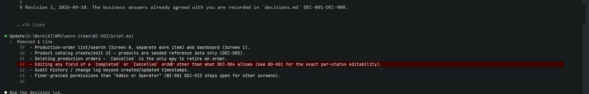
Video 00:44. The brief lands in the work item.
Step 4 — decisions.md · 261 lines
ID
Decision
Outcome
DEC-001
Who may create/edit
Admin and Operator
DEC-003
Status workflow
Draft → InProgress → Completed; Cancelled from either
DEC-004
Edit once not Draft
Product and quantity locked
DEC-006
Validation
Qty > 0, due date ≥ today, notes ≤ 500
DEC-007
Locked field sent anyway
Reject the whole request
DEC-009
Overdue orders
Proposed — waiting for the user
Eight answers the user had already agreed go straight in. Only one new
question is raised.
Part 1 of 4 · Screen A basic design · WI-002 · ProductionManagementAI8 / 65
Step 05 of 12 · Basic design
Video 01:07
BD-001: the screen, specified
docs/en/010_basic-design/BD-001-production-order-create-edit.md · 339 lines · built from ai/templates/basic-design.md
Section
What it pins down
System overview
Every requirement mapped to the sections that cover it
Architecture
React + .NET 10 API + PostgreSQL 17, WI-001 auth; no new boundary
Draft → InProgress → Completed, Cancelled; two terminal states
SCR-001 detail
Routes, API paths, roles, page titles, PC and SP layouts
Mockups
ASCII PC and SP layouts with numbered items (1)–(16)
Validation + events
V-01 … and E-01 to E-06: load, blur, input, save, results
Non-functional
WCAG 2.2 AA details, observability, performance
Video 01:16. BD-001 streams to the terminal.
Part 1 of 4 · Screen A basic design · WI-002 · ProductionManagementAI9 / 65
Step 06 of 12 · Plan, status, evidence
Video 01:25
Durable state lives in the work item, not the chat
Created
plan.md — revision 1, six milestones, marked awaiting review. status.md — what is done, what is next, what is at risk. evidence.md — a traceability matrix from each REQ to design, code, test and status.
Updated so people can find it
docs/en/000_requirements/README.md points to the brief. docs/en/010_basic-design/README.md lists BD-001. CLAUDE.md "Current state" describes WI-002's progress.
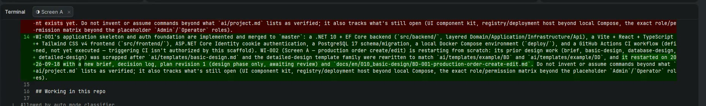
Video 01:33. Traceability matrix and README updates.
Part 1 of 4 · Screen A basic design · WI-002 · ProductionManagementAI10 / 65
Step 07 of 12 · Turn 1 summary
Video 01:41
Claude reports back and asks one question
Video 01:52. The end of the turn 1 summary — 4 m 39 s of agent work.
DEC-009 — asked in the summary
If "due date must be today or later" is checked on every save, an overdue
In Progress order can't be saved, even just to mark it Completed.
1. Check only on create or when the due date changes (recommended)
2. Check on every save 3. Check only on create
Output
Summary + DEC-009 + "plan revision 1 needs your review". Next: database design (DB-002), then detailed
design (DD-001) with a rendered mockup.
Claude Code pre-filled a suggested reply ("Go with option 1…").
The user did not take it.
Part 1 of 4 · Screen A basic design · WI-002 · ProductionManagementAI11 / 65
Step 08 of 12 · Prompt 2
Video 02:03
The human spots a gap
The prompt
There are still open decisions to be made, right?
Claude had asked about only one open item. BD-001's own Open questions
table listed five:
Due-date rule for overdue orders (DEC-009)
Two users editing the same order at once
Which timezone defines "today"
Order-number format
CSRF protection for the new endpoints
Video 02:09. The prompt is sent and Claude starts preparing the form.
Part 1 of 4 · Screen A basic design · WI-002 · ProductionManagementAI12 / 65
Step 09 of 12 · Decision form
Video 02:15
Four questions, one form
Claude batched the open business questions into a tabbed multiple-choice form; each offered a recommended option.
DUE DATEDEC-009
When is "due date ≥ today" checked?
On create or when changed · every save · create only
CONCURRENCYDEC-010
Two users save the same order. Then what?
Reject the stale save · last write wins
TODAYDEC-011
Which timezone defines "today"?
Server's plant timezone · the browser's
ORDER NO.DEC-012
Order number format?
PO-000001 · PO-YYYY-00001 · plain number
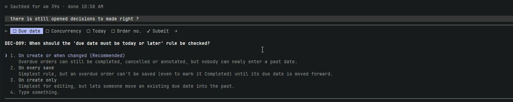
Video 02:20. Tab 1: the due-date rule, with its consequence spelled out.
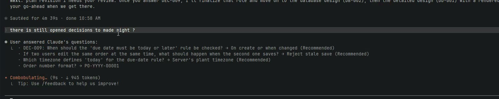
Video 02:42. Tab 4: the one where the user overrode the recommendation.
Part 1 of 4 · Screen A basic design · WI-002 · ProductionManagementAI13 / 65
Step 10 of 12 · Recording the answers
Video 02:48
Every answer lands in the files, not just the chat
ID
Decision
Recorded outcome
DEC-009
Overdue orders
Check only on create or when the due date changes
DEC-010
Concurrent edits
Reject a save based on stale data; the user reloads
DEC-011
"Today"
One configured plant timezone, applied server-side
DEC-012
Order number
PO-YYYY-NNNNN, sequence restarts each year
Output
decisions.md: DEC-009 to DEC-012 now decided. brief.md: REQ-010, REQ-011 and
REQ-014 updated. BD-001 v2: new rule V-08 (stale-save check) and the new order-number format in the
mockups. status.md: status Green; plan.md and evidence.md
updated to match.
Self-recovery
A shell heredoc broke on apostrophes. Claude saved the script to a file and ran it
from there, with no help from the user.
Part 1 of 4 · Screen A basic design · WI-002 · ProductionManagementAI14 / 65
Step 11 of 12 · Turn 2 summary
Video 03:16
Business decisions now; technical ones where they belong
Claude closes the turn by separating out the technical choices — the ones that
don't change how the screen behaves — and parks each at the design step that owns it:
Database design — DB-002
How to generate a number sequence that restarts each year · what happens if a year passes 99,999 orders ·
how the system detects that someone else changed the order
Detailed design — DD-001
Whether the new save endpoints need cross-site request forgery (CSRF) protection
"Plan revision 1 still needs your review. Once you approve it, I'll start
DB-002."
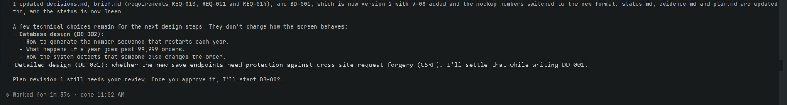
Video 03:25. The turn 2 summary — 1 m 37 s of agent work.
Part 1 of 4 · Screen A basic design · WI-002 · ProductionManagementAI15 / 65
Step 12 of 12 · Review
Video 03:38
The plan waits for a human
#
Milestone
Skill
Deliverable
1
Brief + decision log
requirements
brief.md, decisions.md
2
Basic design
basic-design, screen-design
BD-001
3
Resolve DEC-009
—
decisions.md, BD-001 V-04
4
Database design
database-design
DB-002 schema doc
5
Detailed design + mockup
detailed-design, screen-design
DD-001 + rendered mockup
6
Reconcile and close
—
status.md, evidence.md
Where the session ends
Milestones 1–3 are done. Milestones 4–6 wait on the plan-approval gate in
ai/policies.md: plans are reviewed before implementation continues.
Video 03:43. BD-001's item events, E-01 to E-07 — the screen, specified event by event.
Part 1 of 4 · Screen A basic design · WI-002 · ProductionManagementAI16 / 65
What this demo shows
Six things to notice
01
Short prompts, structured harness
Two one-line prompts were enough. AGENTS.md → workflows → skills → templates → checklists told
the agent what to read and produce.
02
Read before write
Instructions, workflow, skills, the template, the example Excel BD, existing IDs and backend roles were all
read before the first file was written.
03
Humans decide business behaviour
The agent recommends options; the user chooses. One recommendation was overridden — the order-number
format — and recorded as chosen.
04
Human in the loop catches gaps
The user noticed unasked questions and pulled them forward. Claude batched four decisions into one
form.
05
Right decision, right place
Business questions were answered now; technical ones — sequences, concurrency detection, CSRF — were parked
at DB-002 and DD-001.
06
Everything written down, then a gate
Each answer lands in decisions, brief, BD-001, status and evidence. The session stops at plan
approval.
Part 1 of 4 · Screen A basic design · WI-002 · ProductionManagementAI17 / 65
Where this stands
Design phase, first half done
File
State after the session
work-items/WI-002/brief.md
Revision 1, REQ-010 to REQ-018, updated with the answers
work-items/WI-002/decisions.md
DEC-001 to DEC-012 decided
BD-001-...-create-edit.md
Version 2: rule V-08 and the new order-number format
work-items/WI-002/plan.md
Revision 1, awaiting review
work-items/WI-002/status.md
Green; next action is the plan review
work-items/WI-002/evidence.md
Traceability matrix started
Next in the series
Database design (DB-002) — sequence generation, the yearly reset and concurrency detection become schema decisions.
Detailed design (DD-001) — API, functions, screen processing and a rendered mockup.
Implementation — code and tests at every level.
Harness improvements
None from this step. The detailed design and implementation steps
each produced one (RFC 0001 and RFC 0002).
Sources: the session recording (ScreenA_BD.mp4), its
transcript, and the committed files in work-items/WI-002/.
Part 1 of 4 · Screen A basic design · WI-002 · ProductionManagementAI18 / 65
ProductionManagementAI · WI-002 · Demo 03 of 04
Screen A: database design
Three one-line prompts and one four-question form, and Claude Code
produced a 216-line schema design, eight recorded decisions, a new requirement and a revision of the basic
design — for the production-order create/edit screen.
Presented alongside ScreenA_DB_edited.mp4
(3 min 59 s). Step numbers on the slides match the captions in the video.
Recorded 2026-09-18 · Claude Code (Opus 5) in the JetBrains Rider terminal, auto mode on.
Eleven minutes of recording, four and a half of agent work
The human wrote three prompts and answered one form. Everything else was the agent working through the harness.
3
prompts typed
each one line long
4
questions answered
in a single form
4 m 19 s
agent working time
2 m 15 s + 13 s + 1 m 51 s
8
decisions recorded
DEC-013 to DEC-020
The human
Approved plan revision 1 and asked for the database design.
Asked whether any open questions were left — the pivot of the session.
Chose an answer for each of four questions. One was free text, and on the database-login split they overrode the recommendation.
The agent, guided by the harness
Read the database skill, rules and template — and the persistence code — before writing anything.
Decided three schema-level technical points itself, each recorded with its options and rationale.
Corrected its own draft twice, unprompted.
Reported what the user's choice would cost: a plan revision touching WI-001's Compose setup.
Part 2 of 4 · Screen A database design · WI-002 · ProductionManagementAI20 / 65
The walkthrough
12 steps, one video
Each step is a clip in the edited video.
Amber: the human acts.Teal: the agent works and produces output.
STEP 0100:00
Prompt 1
Approve the plan, start DB design
STEP 0200:12
Reads first
Skill, rules, template, then the code
STEP 0300:32
DB-002 written
216 lines of schema design
STEP 0400:46
Self-correction
Rewrites its own operational note
STEP 0500:59
Plan · status · evidence
Approval written into the work item
STEP 0601:15
Turn 1 summary
DEC-013–DEC-015 taken, DEC-016 asked
STEP 0701:33
Prompt 2
"Are there any open questions left?"
STEP 0801:44
Five open items
Three of them previously unrecorded
STEP 0902:02
Prompt 3
"Let's answer all of them"
STEP 1002:11
Decision form
Four tabs, then review and submit
STEP 1102:50
Recording the answers
DEC-016–DEC-020 and REQ-019
STEP 1203:32
Review the schema
decisions.md and DB-002
Times are positions in ScreenA_DB_edited.mp4.
Long stretches of agent work are jump-cut to their result; nothing is sped up.
Part 2 of 4 · Screen A database design · WI-002 · ProductionManagementAI21 / 65
Step 01 of 12 · Prompt 1
Video 00:00
One line approves the plan and starts the schema
The prompt
Approved the plan; let's move on to DB design
Claude Code had pre-filled a suggested reply — "plan approved, let work on the
database design next". The user cleared it and typed their own. The prompt names no file, no template and
no schema.
Output
No artifact yet. The approval itself is the output: it unlocks milestone 4 of plan revision 1, which the
previous session stopped at.
Video 00:06. The prompt replacing Claude Code's suggestion.
Part 2 of 4 · Screen A database design · WI-002 · ProductionManagementAI22 / 65
Step 02 of 12 · Reads first
Video 00:12
Read the rules, then read the code
What Claude read
What it got from it
database-design skill, ai/rules/database.md
The structure DB-002 must follow, and the bar: least privilege, justify every index, state migration impact
ai/templates/ database-design.md
The section order, including an Open decisions table
DB-001, database README
The conventions the identity schema already set
AppDbContext.cs, EF migrations
snake_case naming, uuid keys — what is actually built, not what the docs claim
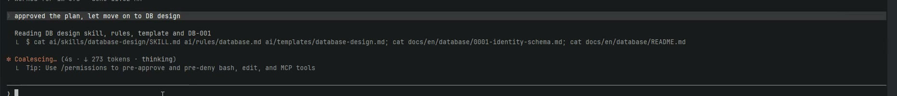
Video 00:18. Read-only commands, collapsed by Claude Code.
Output
"Plan approved, so I'm recording that and starting DB-002. I've checked the existing persistence setup
(snake_case naming convention, uuid keys, EF migrations) so DB-002 can follow it."
Part 2 of 4 · Screen A database design · WI-002 · ProductionManagementAI23 / 65
Steps 03 and 04 of 12 · DB-002, then a correction
Step 3 — 00:32 · Step 4 — 00:46
216 lines of schema, then Claude fixes its own sentence
Minimal product reference data, seeded, no catalog UI
production_orders
One row per production order created on SCR-001
production_order_ number_counters
Last issued sequence per year, to generate PO-YYYY-NNNNN
Plus constraints and indexes with a reason each, an API-field mapping for DD-001 to
confirm, and a rollback command with the warning that rolling back after use deletes all order data.
Video 00:52. Step 4: Claude rewrites line 193 of its own draft.
Step 4 — self-correction
"…the generated order_number column is written by raw SQL in the
migration" became "…is defined with EF Core HasComputedColumnSql(..., stored: true)".
Nobody asked for it.
Part 2 of 4 · Screen A database design · WI-002 · ProductionManagementAI24 / 65
Step 05 of 12 · Plan, status, evidence
Video 00:59
The approval is a file change, not a memory
plan.md — "Review status: submitted for review" becomes approved; the "steps 3–6 await review" line is removed.
evidence.md — the traceability matrix gains a DB-002 reference on every affected requirement row: xmin concurrency for REQ-011, the quantity CHECK for REQ-013, the product foreign key for REQ-015.
status.md — the next milestone becomes DD-001; the risk "plan revision 1 not yet reviewed" is replaced by the new one, DEC-016.
decisions.md — DEC-013, DEC-014 and DEC-015 recorded as decided, each with its options table and rationale.
Each edit is labelled "Allowed by auto mode classifier" on screen.
Video 01:07. Approval and traceability written into the work item.
Part 2 of 4 · Screen A database design · WI-002 · ProductionManagementAI25 / 65
Step 06 of 12 · Turn 1 summary
Video 01:15
Three decisions taken, one handed back
ID
Decided by Claude, because it does not change what the user sees
DEC-013
Order numbers come from a per-year counter table. A year's 100,000th order is rejected rather than changing the user's chosen format.
DEC-014
Use PostgreSQL's xmin to detect that someone else changed an order.
DEC-015
Status is stored as text with a CHECK on the four allowed values.
One open item — DEC-016
"Today the app and the migrations both connect to the database as the owner account.
The database rules call for a separate app login with only the permissions it needs. Changing that means editing
WI-001's Compose setup, so I recommend doing it before any deployment beyond your machine.
It doesn't block the design."
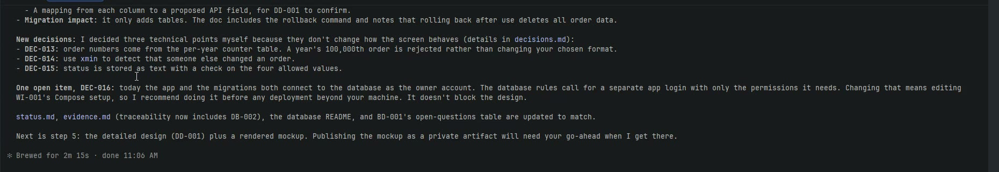
Video 01:24. The end of the turn 1 summary — 2 m 15 s of agent work.
Part 2 of 4 · Screen A database design · WI-002 · ProductionManagementAI26 / 65
Step 07 of 12 · Prompt 2
Video 01:33
The question that changed the session
The prompt
Are there any open questions left?
Claude's summary had named one open item and implied that was the list. Instead of
accepting it, the user asked the agent to go and check.
What Claude did
Rather than answer from memory, it searched its own artifacts —
grep "\| open|proposed|unresolved" across the work item and the design documents.
The same move as in the basic-design session, and it paid off the same way.
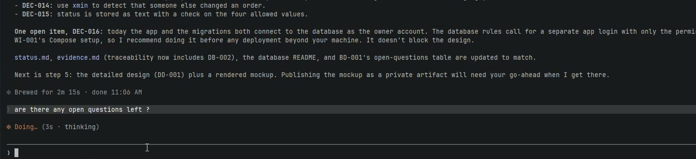
Video 01:38. The prompt is sent and Claude greps its own artifacts.
Part 2 of 4 · Screen A database design · WI-002 · ProductionManagementAI27 / 65
Step 08 of 12 · Five open items
Video 01:44
Two known — and three the agent had quietly decided
#
Item
1
DEC-016, splitting the database logins — already raised
2
CSRF protection — parked for DD-001 to settle
3
Which plant timezone. "You chose one configured plant timezone, but not which one."
4
Cancel with unsaved changes. BD-001 leaves the page without asking; should it confirm?
5
Sample products. Five placeholder products are seeded — swap them for something more realistic?
Video 01:53. "I filled them in myself, and you should confirm them."
Why it matters
Items 3 to 5 were gaps the agent had closed on its own without recording them as questions. Being asked to
re-check surfaced them before the detailed design was built on top of them.
Part 2 of 4 · Screen A database design · WI-002 · ProductionManagementAI28 / 65
Steps 09 and 10 of 12 · Prompt 3 and the decision form
Step 9 — 02:02 · Step 10 — 02:11
Four questions, one form
The user starts typing a direct answer to the two questions Claude asked for —
"Asia/Ho_Chi_Minh, and yes, confirm on cancel" — then deletes it and asks for all five instead:
"Let's answer all of them".
TIMEZONEDEC-017
Which zone sets "today" and the year in PO-YYYY?
Ho_Chi_Minh · Tokyo · UTC
CANCELDEC-018
Cancel after editing the form — then what?
Confirm if edited · leave without asking
PRODUCTSDEC-019
What should the demo seed as products?
5 · ~15 · free text: 30
DB ROLESDEC-016
How should database logins be handled?
split before non-local · split now
Video 02:16. Tab 1 of the form.
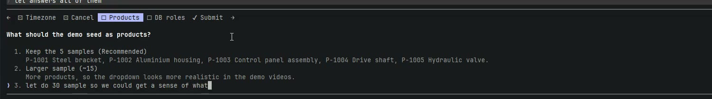
Video 02:35. A free-text answer: "Let's do 30 samples so we can get a sense of the screen's workload".
Part 2 of 4 · Screen A database design · WI-002 · ProductionManagementAI29 / 65
Step 11 of 12 · Recording the answers
Video 02:50
Every answer lands in the files, not just the chat
ID
Question
Recorded outcome
DEC-016
Database logins
Split now: the owner login only runs migrations; the backend runs as a restricted pmai_app login, in local Compose too
DEC-017
Plant timezone
Asia/Tokyo, kept as a config value
DEC-018
Cancel with unsaved changes
Ask "Discard your changes?" only if the form was edited — becomes REQ-019
DEC-019
Demo product seed data
30 sample products, P-1001–P-1030
DEC-020
CSRF protection
Claude's own technical call: no extra token — SameSite=Lax cookie, no CORS, JSON-only bodies
Checked before written
Before recording anything, Claude re-read the code the answers affect — the migration startup path, the
cookie setup in DependencyInjection.cs and deploy/compose.yaml — then confirmed the
cookie configuration matches what ADR-0002 assumed.
Video 02:56. The four answers, as Claude Code recorded them.
Part 2 of 4 · Screen A database design · WI-002 · ProductionManagementAI30 / 65
Step 11 of 12 · Turn 3 summary
Video 03:12
The choice is accepted — and its cost is reported
Plan scope
"Because the login split is happening now, the implementation plan (revision 2) will
need to change WI-001's Docker Compose files: a new required runtime password in .env.example
with no default; a second connection string; a script that grants the runtime login's permissions; and the
migration command in ai/project.md updated to run as the owner login."
"That plan revision will come to you for review before any of it is built."
Video 03:23. "Nothing in Screen A's design is open now."
Output
Every decision from DEC-001 to DEC-020 is decided. The design phase's remaining work is DD-001 and a
rendered mockup — and Claude states it will ask before publishing that mockup.
Part 2 of 4 · Screen A database design · WI-002 · ProductionManagementAI31 / 65
Step 12 of 12 · Review
Video 03:32
The open-decisions table, all resolved
The user reads decisions.md, then opens DB-002 and scrolls to the
table the document opened with — the one that listed what was still undecided when the schema was written.
Decision
Status
Per-year order sequence
decided — DEC-013
Past 99,999 orders in one year
decided — DEC-013
Optimistic-concurrency token
decided — DEC-014
Status storage
decided — DEC-015
Split migration-owner and runtime roles
decided — split now (DEC-016, user)
Demo product seed size
decided — 30 (DEC-019, user)
The next prompt, "Move on to the detailed design", is typed but not
sent. The recording ends there.
Video 03:52. DB-002's open decisions, every row now carrying a decision ID.
Part 2 of 4 · Screen A database design · WI-002 · ProductionManagementAI32 / 65
What this demo shows
Six things to notice
01
The gate is a file, not a memory
The previous session stopped at plan approval. This one opens by writing that approval into
plan.md before any design work starts.
02
Read the code, not just the docs
Naming convention, key types and migrations were read from AppDbContext before the schema was
written, so DB-002 describes what exists.
03
Asking again finds more
"Are there any open questions left?" made the agent search its own artifacts and surface three gaps it had
silently closed.
04
The human can overrule
On the database-login split Claude recommended waiting. The user said split now — and the agent recorded the
choice and the work it creates.
05
Free text is a first-class answer
"Let's do 30 samples so we can get a sense of the screen's workload" became DEC-019 and a concrete
P-1001–P-1030 seed.
06
One answer can grow the spec
The Cancel decision did not just edit a document: it added REQ-019 to the brief and a dialog with focus and
Escape behaviour to BD-001.
Part 2 of 4 · Screen A database design · WI-002 · ProductionManagementAI33 / 65
Where this stands
Design phase, second half unlocked
File
State after the session
0002-production-order-schema.md
Created; tables, constraints, grants, API mapping
decisions.md
DEC-001 to DEC-020 decided
brief.md
REQ-019 added
BD-001-...-create-edit.md
Revision 3
plan.md
Revision 1 approved; revision 2 scope known
status.md
Green; next action is DD-001
evidence.md
Traceability now reaches the schema
Next in the series
Detailed design (DD-001) — API contract, function and screen-processing designs, and a rendered mockup. Publishing the mockup needs the user's go-ahead.
Implementation — including the restricted runtime login this session decided on, and code and tests at every level.
Carried forward
DEC-016 turns into real work: a new password in .env.example, a second
connection string, a grant script, and a migration command that runs as the owner.
Sources: the session recording (ScreenA_DB.mp4), its
transcript, and the committed files in work-items/WI-002/ and docs/en/database/.
Part 2 of 4 · Screen A database design · WI-002 · ProductionManagementAI34 / 65
ProductionManagementAI · WI-002 · Demo 02 of 04
Screen A: detailed design
Two prompts and one authorization question, and Claude Code produced four
detailed-design documents, a rendered mockup published as a private artifact, four decisions — and a change to
the harness that produced them.
Presented alongside ScreenA_DD_edited.mp4
(4 min 00 s). Step numbers on the slides match the captions in the video.
Recorded 2026-09-18 · Claude Code (Opus 5) in the JetBrains Rider terminal, auto mode on.
Sixteen minutes of recording, ten and a half of agent work
The human wrote two prompts and answered one question. Everything else was the agent working through the harness.
2
prompts typed
one of them a correction
1
authorization asked
answered in 4 seconds
10 m 23 s
agent working time
7 m 27 s + 2 m 56 s
1,314
lines of design
across four documents
The human
Reviewed the database design, then asked for the detailed design.
Cleared the one permission the plan had deferred, before any work depended on it.
Noticed that two of the four DD templates had produced no document — and said so in one line.
The agent, guided by the harness
Read the plan's authorization table and stopped to ask, rather than discovering the gate halfway through.
Read the running app's own CSS before designing a mockup for it.
Fed a gap found while writing the API contract back up into the basic design.
Turned its own mistake into a memory, then into a proposal to change the shared templates.
Part 3 of 4 · Screen A detailed design · WI-002 · ProductionManagementAI36 / 65
The walkthrough
12 steps, one video
Each step is a clip in the edited video.
Amber: the human acts.Teal: the agent works and produces output.
STEP 0100:00
Prompt 1
DB design reviewed, start the DD
STEP 0200:12
Reads first
Skills, templates, and the app's own code
STEP 0300:32
Authorization
May the mockup be published?
STEP 0400:50
DD-001 written
The detailed design
STEP 0501:03
DD-001-API written
Split out for Screen B to reuse
STEP 0601:16
Mockup approach
Reuses the app's own palette
STEP 0701:38
Mockup published
Private artifact, 11 states
STEP 0801:51
Turn 1 summary
DEC-021–DEC-024, BD-001 rev 4
STEP 0902:23
Review: DD-001
…and the DD template folder
STEP 1002:37
Prompt 2
Two templates produced no document
STEP 1102:49
Memory, then the fix
DD-001-FN, DD-001-SPD, rewiring
STEP 1203:47
Review the four docs
…plus the mockup
Times are positions in ScreenA_DD_edited.mp4.
Long stretches of agent work are jump-cut to their result; nothing is sped up.
Part 3 of 4 · Screen A detailed design · WI-002 · ProductionManagementAI37 / 65
Step 01 of 12 · Prompt 1
Video 00:00
Review first, then hand the work on
The prompt
I reviewed the DB design and it looks okay, so let's move on to detailed design for this work item
Before typing, the user scrolls plan.md: its Authorization table
("Publish rendered mockup as a private Artifact — ask at execution — not yet authorized — step 5"), its risks,
and the sign-off recording revision 1 as approved.
Output
The prompt carries a review result, not just an instruction. Claude Code's suggested reply
("Move on to the detailed design") was cleared and replaced.
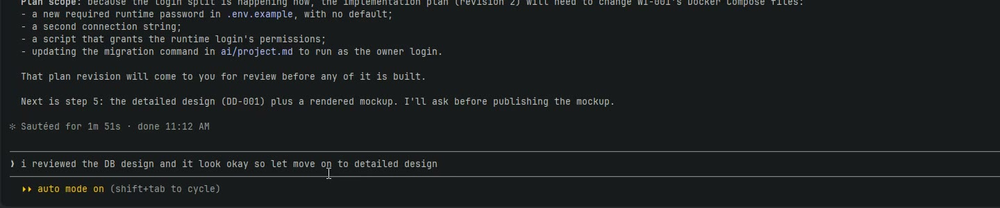
Video 00:06. plan.md above, the prompt below.
Part 3 of 4 · Screen A detailed design · WI-002 · ProductionManagementAI38 / 65
Step 02 of 12 · Reads first
Video 00:12
Read the rules — and the running app
What Claude read
What it got from it
detailed-design and screen-design skills
The route through this step and its checklists
ai/templates/DD/*
The four DD templates and what each is for — the detail that matters in step 10
LoginPage.tsx, AuthContext.tsx, index.css
The app's real visual language — used an hour later to decide how the mockup should look
ADR-0001, the test projects
The layered backend contract and what test tooling already exists
Video 00:18. Read-only commands, collapsed by Claude Code.
Output
Claude does not start writing. It stops on a permission question instead —
"Before writing: plan step 5 says publishing the rendered mockup as a private artifact needs your OK at that
point, so I'm asking now so it doesn't hold things up later."
Part 3 of 4 · Screen A detailed design · WI-002 · ProductionManagementAI39 / 65
Step 03 of 12 · Authorization
Video 00:32
The gate was written down, so it was honoured
Video 00:41. One question, two real options, answered in about four seconds.
What was asked
"DD-001 includes a rendered mockup of Screen A covering create, edit, locked-fields, validation-error,
success and discard-dialog states. Can I publish it as a private claude.ai artifact (only you can see it unless
you share it)?" — Yes, publish privately · Local HTML file only · Type something
Why it matters
Nobody re-stated the rule in the prompt. It was a row in plan.md's authorization table —
ask at execution — written when the plan was drafted. The agent read it, honoured it, and cleared it
before starting the work that depended on it, not halfway through.
Part 3 of 4 · Screen A detailed design · WI-002 · ProductionManagementAI40 / 65
Steps 04 and 05 of 12 · DD-001 and the API companion
Step 4 — 00:50 · Step 5 — 01:03
The design, and the contract split out from it
Step 4 — DD-001-production-order-create-edit.md
609 lines: modules, screen states, processing flow, persistence, exception
handling, observability and test viewpoints. Its tables map every BD rule to a concrete place in the code —
ProductionOrder.ValidateQuantity for V-02/V-05, IPlantClock.Today for V-04,
request-vs-entity xmin for V-08.
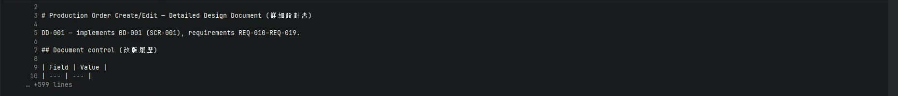
Video 00:56. DD-001 streams to the terminal.
Step 5 — DD-001-API-production-orders.md
292 lines. Split into its own document because Screen B will reuse
/api/products — a decision about the next work item, made while writing this one.
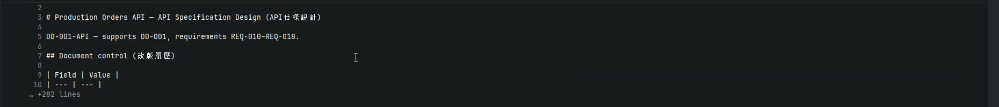
Video 01:09. The API specification.
Design feeds back upstream
Writing the contract exposed a missing quantity upper bound. It became
DEC-024 and BD-001 revision 4 — not a silent choice in the code.
Part 3 of 4 · Screen A detailed design · WI-002 · ProductionManagementAI41 / 65
Steps 06 and 07 of 12 · The mockup
Step 6 — 01:16 · Step 7 — 01:38
It looks like the product, because it read the product
Step 6 — before building
"The DD documents are written. Before building the mockup I need to load the artifact design guidance."
→ Skill(artifact-design)
…and the visual decision
"I'll build the mockup using the app's existing light-only Tailwind gray palette from
LoginPage.tsx — gray-900 buttons, gray-300 borders, system font — while only the spec-sheet
chrome around it adapts to the viewer's theme."
That is what reading index.css in step 2 was for.
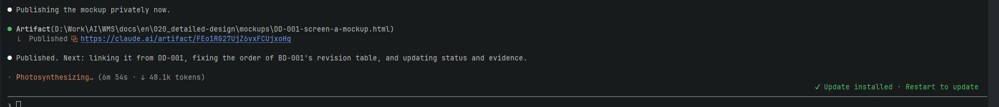
Video 01:44. Step 7: published to a private artifact URL.
mockups/DD-001-screen-a-mockup.html (292 lines) stays in the
repository; the artifact is the rendered copy, linked from DD-001.
Part 3 of 4 · Screen A detailed design · WI-002 · ProductionManagementAI42 / 65
Step 08 of 12 · The published mockup, and turn 1
Video 01:51
A design a non-developer can actually judge
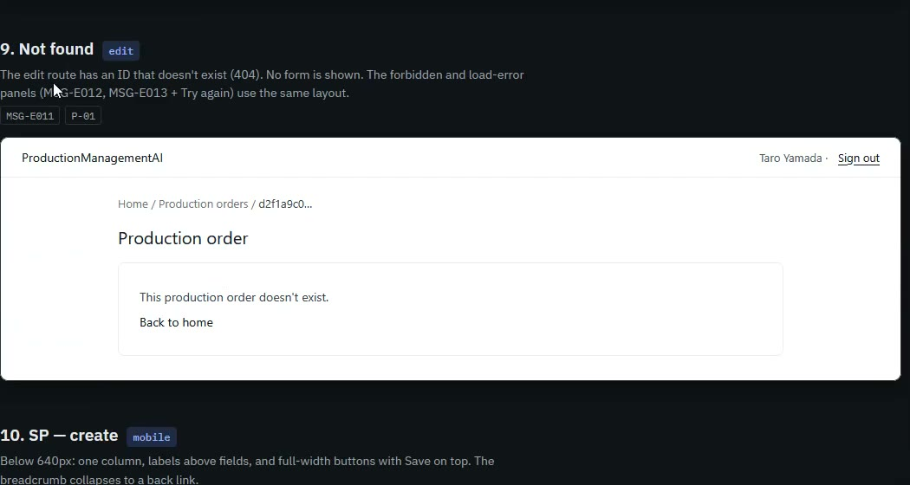
Video 01:58. State 8 of 11 — the discard dialog, tagged REQ-019, DEC-018, items 17–19, E-07, E-09.
The artifact holds 11 static states: create empty, product list open
(30 items), validation errors, created → edit (Draft), in progress (locked), completed (terminal, overdue),
stale save (409), discard dialog, not found, SP create, SP locked. Each carries the requirement and decision
IDs it realises.
ID
Decided while writing the design
DEC-021
Browser-local date for early feedback; the server's plant date is authoritative
Part 3 of 4 · Screen A detailed design · WI-002 · ProductionManagementAI43 / 65
Steps 09 and 10 of 12 · Review, then the correction
Step 9 — 02:23 · Step 10 — 02:37
The user almost accepted it
The user types a prompt accepting the work — "The design looks okay, let's
move on to the implementation" — and does not send it. They read DD-001, then expand
ai/templates/DD/ in the project tree, where api-design.md,
function-design.md and screen-processing-design.md sit side by side. Two of them
produced no document.
The prompt that was sent instead
There are still 2 templates not output to an .md file: function-design and screen-processing-design
Video 02:43. The template folder open, and the correction being typed.
Part 3 of 4 · Screen A detailed design · WI-002 · ProductionManagementAI44 / 65
Step 11 of 12 · Three scopes of fix, in order
Video 02:49
Fix the output, fix yourself, then propose the rule
"Understood. I left those two out as optional, but you want the full template family produced.
First I'll save that preference so later design steps include all four."
SCOPE 1 — THIS AGENT
A memory, written first
Before producing anything, Claude wrote the preference down: "in the WMS project, detailed design must
output every DD template (main + api-design, function-design, screen-processing-design) as its own .md
file". The order matters — the habit is fixed before the symptom.
SCOPE 2 — THIS WORK ITEM
The two missing documents
DD-001-FN (325 lines) and DD-001-SPD (212 lines). DD-001 was then rewritten to
point at them instead of repeating their content, and the API document's cross-references, the docs
index, status.md and evidence.md were updated to match.
SCOPE 3 — EVERYONE
A proposal, not a change
"The project's shared templates and the detailed-design skill still call the three companions optional. If
you want that to be the rule for everyone, I can propose the change. Changes to shared templates need your
review before they take effect."
Video 02:56. "Searching for 1 pattern, writing 1 memory…"
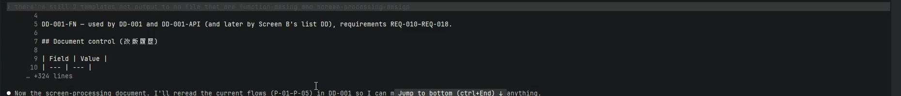
Video 03:22. The second companion, then DD-001 rewired to both.
Part 3 of 4 · Screen A detailed design · WI-002 · ProductionManagementAI45 / 65
Step 11 of 12 · Turn 2 summary
Video 03:38
The design set stops repeating itself
Document
Lines
Role
DD-001
485
The design; now delegates to the three companions
DD-001-API
292
The HTTP contract; reusable by Screen B
DD-001-FN
325
Function design, backend and frontend
DD-001-SPD
212
Screen processing and exception handling
Output
"I saved this as a preference in memory: for this project, detailed design always produces all four
template documents." — Worked for 2m 56s
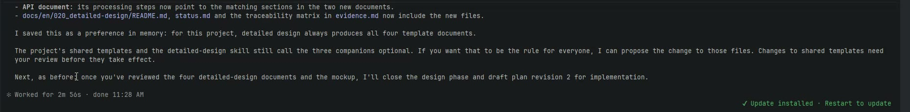
Video 03:38. The turn 2 summary, ending on the offer to change the shared templates.
Part 3 of 4 · Screen A detailed design · WI-002 · ProductionManagementAI46 / 65
Step 12 of 12 · Review
Video 03:47
Four documents and a mockup, all traceable
The user reads each document in turn, ending on DD-001-SPD's exception-handling
table — 401, 403, 404, 415, 400 with message IDs, 409 on a stale save, 422 on a rule violation, and 500
MSG-E013 with no exception detail leaked.
Its closing section reads "Unresolved decisions: None." with the related
decision IDs listed — DEC-007, DEC-008, DEC-009, DEC-018, DEC-020, DEC-021, DEC-023.
Where the session ends
Claude's suggested next prompt — "Update the templates and skill so all DD companions are always
produced" — sits unsent in the input line. That became harness RFC 0001.
Video 03:53. 020_detailed-design, complete.
Part 3 of 4 · Screen A detailed design · WI-002 · ProductionManagementAI47 / 65
The harness improving itself
RFC 0001 — always produce all four DD documents
This is the one step in the Screen A series where using the harness exposed a defect
in the harness, and the run produced a change proposal against it.
Root cause — in the wording, not the agent
The templates described the three companions as optional — "Use it when…",
"None — this screen's design fits entirely in this file". Folding their content into the main DD was a
permitted reading of the rule. The RFC records that, with the session as evidence.
What the RFC changed
ai/templates/detailed-design.md and the three ai/templates/DD/* templates
ai/evaluations/baseline-cases.md — so the case is checked in future evaluations
The boundary that was kept
The agent changed its own behaviour immediately, and offered the
change to everyone's. Shared harness files are reviewed by their owner before they take effect — the same
gate as the mockup in step 3, applied to the harness itself.
Status
Adopted. Recorded at
ai/improvements/0001-dd-companions-always-produced.md.
One other walkthrough produced an RFC: the implementation step
found that nothing told the harness to keep superseded plan revisions, which became
RFC 0002 — keep every plan revision, oldest first.
Part 3 of 4 · Screen A detailed design · WI-002 · ProductionManagementAI48 / 65
What this demo shows
Six things to notice
01
A written gate is honoured unprompted
plan.md said publishing needs an OK "at execution". Claude asked before starting, not halfway
through — nobody restated the rule.
02
It reads the app before designing for it
LoginPage.tsx and index.css were read in step 2 and used in step 6, so the
mockup looks like the product.
03
Design feeds back upstream
A missing quantity bound found while writing the API contract became DEC-024 and BD-001 revision 4, not a
silent choice in code.
04
The human catches what the rule allowed
Two of four templates produced nothing. The user spotted it from the template folder and said so in one
line.
05
Fix yourself before fixing the output
The preference went to memory first, then the missing documents were written. The habit is fixed
before the symptom.
06
Shared rules stay with the human
Changing everyone's templates was offered as a proposal and became RFC 0001 after review — not applied
unilaterally.
Part 3 of 4 · Screen A detailed design · WI-002 · ProductionManagementAI49 / 65
Where this stands
Design phase complete, implementation next
File
State after the session
DD-001 + API + FN + SPD
Complete; 1,314 lines, cross-linked
DD-001-screen-a-mockup.html
In the repo; published as a private artifact
decisions.md
DEC-001 to DEC-024 decided
BD-001-...-create-edit.md
Revision 4
status.md
Green; step 6 and the DD review remain
evidence.md
Traceability reaches the detailed design
ai/improvements/0001-...md
Adopted
Carried into the implementation plan
The split database logins from DEC-016.
OpenTelemetry, which isn't set up in the backend at all.
A choice of end-to-end test tool.
Turning error responses into the standard Problem Details format.
Next in the series
Implementation — code and tests at every level, and the step that produced
the second harness RFC.
Sources: the session recording (ScreenA_DD.mp4), its
transcript, and the committed files in docs/en/020_detailed-design/,
work-items/WI-002/ and ai/improvements/.
Part 3 of 4 · Screen A detailed design · WI-002 · ProductionManagementAI50 / 65
ProductionManagementAI · WI-002 · Demo 04 of 04
Screen A: implementation
Six prompts and one form turned four design documents into a working
screen: backend, database, frontend, 133 tests, two pull requests — and the harness improvements the earlier
steps had only proposed.
Presented alongside
ScreenA_Implementaion_edited.mp4 (5 min 59 s, cut from 50 min 44 s). Step numbers on the slides
match the captions in the video.
Recorded 2026-09-18 · Claude Code (Opus 5) in the JetBrains Rider terminal, auto mode on.
Fifty minutes of recording — and one 34-minute turn
The shape is unlike the other three steps. Three quarters of the agent's working time is a single
unattended turn, so the human's work sits at both ends: the plan before it, the merge after it.
5
prompts in the cut
two of them corrections
34 m
longest single turn
domain → E2E, unattended
133
tests written
49 + 38 + 38 + 8
2
pull requests
Screen A and the harness
The human
Chose the E2E tool, the accessibility approach, the git scope and where harness changes go.
Made Claude restore the superseded plan — twice, until it was in chronological order.
Approved revision 2, then squash-merged both PRs personally. Merge was never authorized for the agent.
The agent, guided by the harness
Wrote RFC 0002 with its own evaluation case, and had already applied RFC 0001 before the cut begins.
Named its own deviations: the index, the Docker workaround, an extension method that departed from the DD.
Proved the restricted login instead of asserting it, and prevented a CRLF failure before it happened.
Stopped at the merge gate and reconciled master afterwards.
Part 4 of 4 · Screen A implementation · WI-002 · ProductionManagementAI52 / 65
The walkthrough
11 steps, one video
Each step is one or more clips in the edited video.
Amber: the human acts.Teal: the agent works and produces output.
STEP 0100:00
Four questions
E2E · a11y · git scope · harness PR
STEP 0200:32
Plan revision 2
14 steps, and its own caveats
STEP 0301:16
Keep the old plan
Restored — in the wrong place
STEP 0401:42
Chronological order
The rule fixed, then the file
STEP 0502:08
Approved + RFC 0002
Keep every plan revision
STEP 0602:32
Branches, worktrees
Two branches, PRs to come
STEP 0702:44
Backend + database
Tests, CI verdict, CRLF caught
STEP 0803:29
API and frontend
A real bug found and fixed
STEP 0903:58
E2E and the proof
8 journeys; PR opened; 34m turn ends
STEP 1005:17
The screen exists
Both PRs squash-merged
STEP 1105:35
Reconciling master
Two things need your call
NOT IN THE CUT
The session also opened by applying RFC 0001 from the previous step — see slide 13
Times are positions in ScreenA_Implementaion_edited.mp4.
50 min 44 s of source, jump-cut to 5 min 59 s; nothing is sped up. The cut begins at the implementation planning — the session’s opening minutes, which applied the previous step’s RFC 0001, are left to that step’s deck.
Part 4 of 4 · Screen A implementation · WI-002 · ProductionManagementAI53 / 65
Step 01 of 11 · Four questions
Video 00:00
The choices the agent would not make alone
E2E TOOLDEC-025
Which end-to-end test tool?
Playwright · Cypress · none for now
A11Y CHECKDEC-026
How should accessibility checks run?
axe in Vitest + E2E · manual only
GIT SCOPEDEC-027
Which git operations are authorized?
branch, commit, push, open PR — merge: no
HARNESS PRDEC-028
Where does the harness change go?
Its own branch/PR · same as Screen A
Video 00:06. "No E2E tool has been chosen yet; WI-001 deferred it." — the question carries its own history.
Part 4 of 4 · Screen A implementation · WI-002 · ProductionManagementAI54 / 65
Step 02 of 11 · Plan revision 2
Video 00:32
A plan is a document, not a promise
14 numbered steps, each with what it depends on, which skill it uses, what it must deliver and
how that will be checked. This is the artifact the rest of the session is measured against.
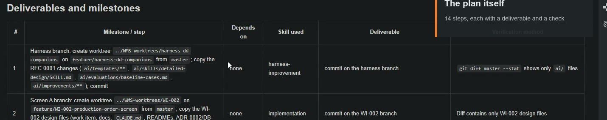
Video 00:55. Steps 1 and 2: the two branches — created before a line of Screen A is written.
Things to know before approving
CI — opening the PRs starts GitHub Actions; the project's first real run.
E2E stays out of CI — it needs the whole Compose stack. Five new dependencies, pinned and
vulnerability-checked. Branch name — the skill suggests one, but the project's own DEC-009 wins;
that contradiction was later fixed in RFC 0003.
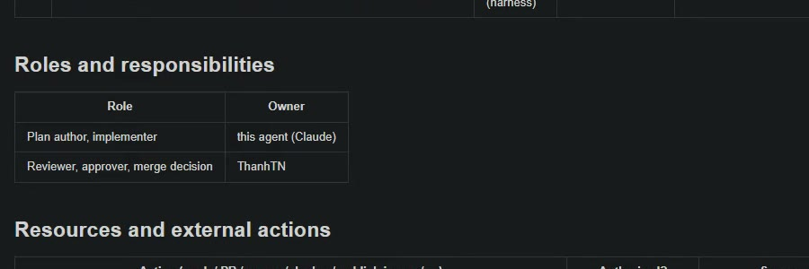
Video 01:09. Who owns what, written down before the work starts.
Part 4 of 4 · Screen A implementation · WI-002 · ProductionManagementAI55 / 65
Steps 03 and 04 of 11 · Protecting the audit trail
Step 3 — 01:16 · Step 4 — 01:42
Two corrections, one minute of typing
Prompt 1
Keep the design plan in there so we can back-track it
Result
Revision 1 rebuilt from the session's own edits — git could not help, it had never been committed —
and restored in full, with a note saying so. But placed below revision 2.
Prompt 2
No — put it in chronological order
Result
"Got it: oldest first, so the file reads in the order things happened. I'll update the saved rule
first, then reorder the file."
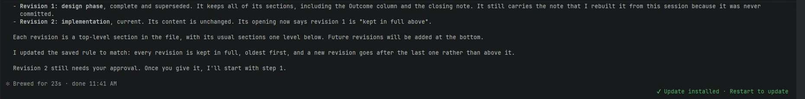
Video 02:01. "Every revision is kept in full, oldest first, and a new revision goes after the last one."
Part 4 of 4 · Screen A implementation · WI-002 · ProductionManagementAI56 / 65
Steps 05 and 06 of 11 · RFC 0002, then the branches
Step 5 — 02:08 · Step 6 — 02:32
Approval and a rule change, in one prompt
Prompt 3
OK, the revision 2 plan seems solid, so approved. Also update the harness
RFC 0002 is written the same way as RFC 0001 — status, affected files,
summary, and a motivation section citing this session as evidence.
Then
What was created
Worktree 1
feature/harness-wi002-feedback — RFC 0001 and RFC 0002, one commit each
Worktree 2
feature/WI-002-production-order-screen — the design-phase commit
Main worktree
Cleaned; each copied file verified with git diff --no-index before reverting
Video 02:26. RFC 0002 — while the editor shows the plan’s authorization table.
Part 4 of 4 · Screen A implementation · WI-002 · ProductionManagementAI57 / 65
Step 07 of 11 · Backend and database
Video 02:44
Diagnosing CI, and preventing a failure
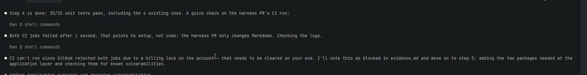
Video 02:52. "That points to setup, not code: the harness PR only changes Markdown."
Video 03:20. A Windows-to-Linux failure caught before it could happen.
Diagnosed, not retried
Both CI jobs failed in one second. Claude reasoned from the content — a Markdown-only PR cannot fail on
code — read the logs, and found a GitHub billing lock. Recorded as blocked in evidence.md
rather than treated as a defect.
Prevented, not debugged
"There's no .gitattributes file, and with core.autocrlf set to true, the new init
script would get CRLF line endings and fail on Linux. I'll add a .gitattributes rule to
keep *.sh files as LF alongside the script."
Part 4 of 4 · Screen A implementation · WI-002 · ProductionManagementAI58 / 65
Step 08 of 11 · API and frontend
Video 03:29
The requirement wrote the test; the test found the bug
The component cites its requirement
// BD-001 items 17-19 (REQ-019, DEC-018). The native <dialog> + showModal() gives the focus trap, Escape and backdrop for free; Escape fires "cancel", which is treated as Keep editing.
A real bug
"React only calls .focus() on mount, not when the always-mounted
dialog opens, so autofocus never fires as expected. I'll add an explicit focus call on
Keep editing right after showModal()."
REQ-019 said focus must start on Keep editing. The component looked correct
and was wrong. The only reason it was caught is that a test was written from the requirement.
Video 03:49. Found, explained and fixed — then 38 frontend tests pass.
Part 4 of 4 · Screen A implementation · WI-002 · ProductionManagementAI59 / 65
Step 09 of 11 · E2E and the proof
Video 03:58
The least-privilege decision, proved
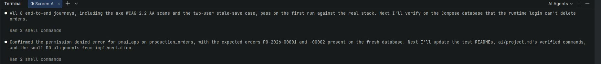
Video 04:29. DEC-016, closed by attempting the forbidden operation.
"All 8 end-to-end journeys, including the axe WCAG 2.2 AA scans and the
two-user stale-save case, pass on the first run against the real stack."
"Confirmed the permission denied error for pmai_app
on production_orders, with the expected orders PO-2026-00001 and
-00002 present on the fresh database."
Careful with someone else's machine
The database volume was wiped only because step 7 authorized it. A fresh
PMAI_APP_DB_PASSWORD was generated into the worktree's own .env, never printed,
and checked as gitignored — the user's own .env was left untouched.
Part 4 of 4 · Screen A implementation · WI-002 · ProductionManagementAI60 / 65
Step 09 of 11 · Cooked for 34m 0s
Video 05:03
What an unattended half-hour reports back
Kind
What the summary said
Deviation
EF Core always adds an index on product_id; removing it would make migrations drift, so DB-002 was updated instead (DEC-029)
Workaround
Docker Desktop won't mount files from the worktree, so the login script is baked into a small Postgres image — "also more portable"
Defect
The discard dialog wasn't focusing "Keep editing". Fixed and covered by tests
Noise
A Kerberos-library warning from the database driver; harmless, recorded in evidence.md
Limits
E2E isn't in CI yet and runs on Chromium only. No manual screen-reader pass
Video 05:03. The same plan, hours later: every step now carries its Outcome.
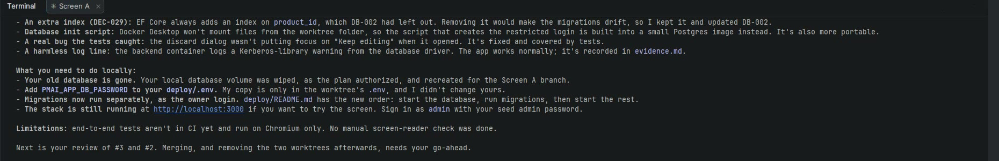
Video 05:03. Built, caught, and still missing — separated.
And what the human must do
"Add PMAI_APP_DB_PASSWORD to your deploy/.env — my
copy is only in the worktree's .env, and I didn't change yours." Then: "Merging, and removing
the two worktrees afterwards, needs your go-ahead."
Part 4 of 4 · Screen A implementation · WI-002 · ProductionManagementAI61 / 65
Step 10 of 11 · The screen exists
Video 05:17
The mockup, now running
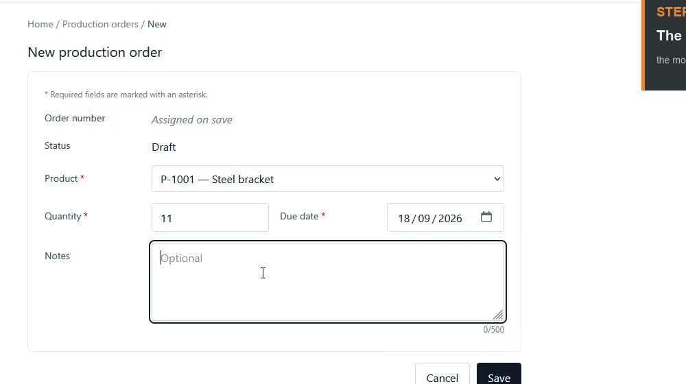
Video 05:26. localhost:3000/production-orders/new, signed in as Seed Admin.
The user squash-merges both pull requests from their own account
(DEC-030) and opens the running application.
It is the same layout published as a private artifact in the detailed-design
step — order number "Assigned on save", status Draft, the 30-product <select>, the notes
counter, Cancel and Save — now backed by the API, the migration, the seeded database and the restricted
pmai_app login.
The gate held
DEC-027 authorized branch, commit, push and open-PR. Merge was never
authorized for the agent, and it never merged.
Part 4 of 4 · Screen A implementation · WI-002 · ProductionManagementAI62 / 65
Step 11 of 11 · Reconciling
Video 05:35
"The merge record is missing, and it's wrong"
After the squash merges, Claude checks what actually landed: "Your local
master is now at 1eccf9c, with your demos/ files untouched. The only
difference from PR #3's head is the 12 harness files that came in with #2, so nothing was lost in the
squash."
Then it reports a problem with its own earlier work: the commit that
closes plan revision 2 exists only on the deleted branch, and its text says the merge used merge commits —
which is not what happened.
Two options offered, not one
Correct the record and open a small follow-up PR — or leave it, and accept that status.md
still says "in-review" and revision 2 has no closure line.
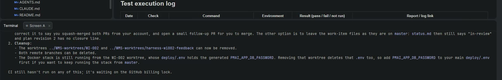
Video 05:47. Cleanup listed too, including which .env disappears with the worktree.
Part 4 of 4 · Screen A implementation · WI-002 · ProductionManagementAI63 / 65
The harness improving itself
RFC 0002 — keep every plan revision, oldest first
The second of the two improvements the Screen A series produced — and the step that also applied the first.
SCOPE 1 — THIS WORK ITEM
Revision 1 rebuilt
It had never been committed, so git could not restore it. Claude reconstructed it from the session's own
edits, exactly as approved, and added a note saying so.
SCOPE 2 — THIS AGENT
The rule, then the file
"I'll update the saved rule first, then reorder the file." Every revision kept in full, oldest first, new
revisions appended — the same ordering the detailed-design step used.
SCOPE 3 — EVERYONE
RFC 0002, after review
The user asked for the harness itself to be updated. ai/templates/plan.md,
ai/skills/planning/SKILL.md and a new evaluation case.
Root cause, again in the wording
The plan template said only "If this supersedes a prior revision, state which and why". Nothing said to
keep the old one. The agent's reading was permitted; the rule was incomplete.
Also in this session
RFC 0001 was applied here — four templates, the templates README, the detailed-design skill and a new evaluation case — and committed on its own branch, because harness changes stay out of Screen A’s pull request (DEC-028). Those opening minutes are covered by the detailed-design deck, not the cut.
Also observed here, fixed in RFC 0003
The implementation skill's branch-name example contradicted the project's branch
policy, and the Playwright suite ran only locally. Both were closed later.
Part 4 of 4 · Screen A implementation · WI-002 · ProductionManagementAI64 / 65
Where the series ends
One screen, four steps, a full paper trail
Step
Agent time
Produced
01 Basic design
6 m 16 s
Brief, decision log, BD-001
03 Database design
4 m 19 s
DB-002, DEC-013–DEC-020
02 Detailed design
10 m 23 s
4 DD documents + mockup
04 Implementation
~40 m
The screen, 133 tests, 2 PRs
Every requirement from REQ-010 to REQ-019 traces through a BD section, a DB
constraint, a DD module, code and at least one test case — and `evidence.md` records each one as
verified.
What the harness gained
RFC 0001 — always produce all four DD documents.
RFC 0002 — keep every plan revision, oldest first.
Two evaluation cases, so neither regression returns unnoticed.
Still open at the end of the recording
CI had not run — a GitHub billing lock. It first executed later, on PR #5, and
now runs backend, frontend and E2E on every pull request.
Sources: the session recording
(ScreenA_Implementaion.mp4), its transcript, and the committed files in
work-items/WI-002/ and ai/improvements/.
Part 4 of 4 · Screen A implementation · WI-002 · ProductionManagementAI65 / 65